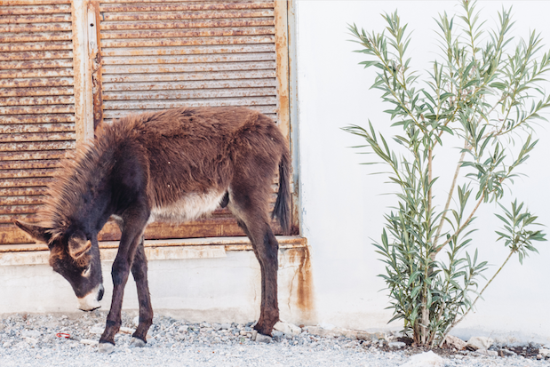
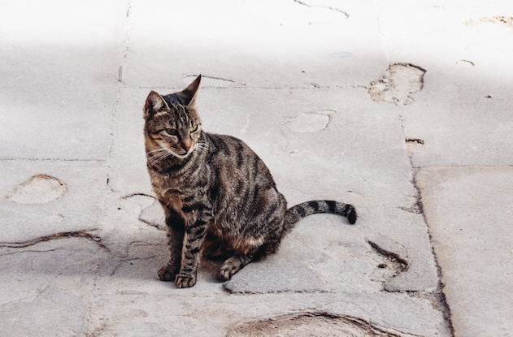
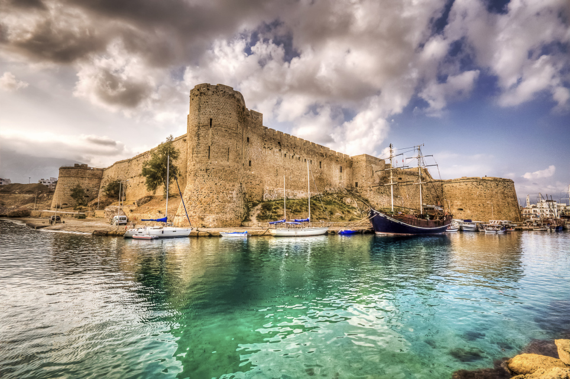
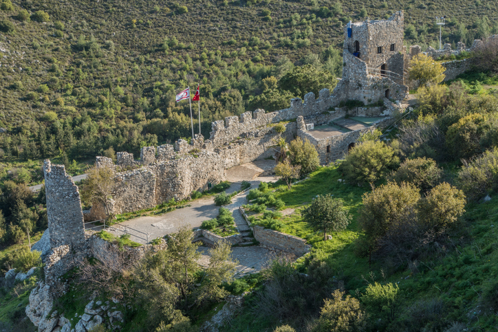

Nicosia (left) is a properly interesting town – the only divided capital city on Earth. When Cyprus split, Nicosia was riven through the middle with a border, which you can now cross on foot via a checkpoint if you’re curious what the south of the island looks like. On the east coast you’ll find Varosha (right), a suburb of the city of Famagusta that was at one point the most popular resort on Cyprus, attracting big names such as Richard Burton and Elizabeth Taylor at its peak. Abandoned swiftly at the start of the 70s to create part of the buffer zone that separates north and south Cyprus, to this day the theatres, cinemas and fancy hotels remain, rotting as they were left.


Donkeys and cats
When everything went a bit mad in the early 70s, the local donkey population in the Karpaz peninsular – that pointy bit that sticks out the top right of the island – was left untended. They multiplied and now roam wild among the largely unspoiled countryside. Hire a car and pootle up there with a carrot, they really aren’t shy.There are more cats than people on Cyprus. The earliest known pet cat discovered by archaeologists was found in Cyprus, pre-dating Egyptian finds by over 4,000 years. Basically, if you like cats you’re among friends here.


Beautiful castles
Kyrenia Castle (left), at the east end of the old harbour in Kyrenia is a 16th-century castle built by the Venetians over a previous Crusader fortification. St Hilarion (right), pick of the bunch, also has startlingly beautiful views down in to Kyrenia Harbour, where, just along from the many excellent bars, restaurants and cafes, looms another castle, dating to the 15th century, containing no fewer than six museums and one of the oldest shipwrecks in the world.